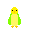

Budgies - Log
Hi! I am Sophia
( aka - fractal kitty).
This is a
December adventure
for 2024. Last year I played on
sluggly.art.
This year I am just piddling around with css, p5js, react, elm, and haskell.
My git for this adventure is available here.
Day 15
Made
example
collaborative coding activity.
Day 14
Cat sitting (no budgies today)
Did a sketch for chromatic Communication #wcccChallenge
Changed homepage to be html and not p5js
Day 12-13
Travel
Day 10-11
Worked on getting plotter to work for postcard exchange. (I need to get a new power cord for my axidraw).
Worked on sketch for postcards in p5js.
Day 9
Defuse the budgie sketch in p5js.
Helped get Genuary prompts ready
Fixed memory issue and RSS feed size for soHaiku.art - I'm not sure if it's going to work with brid.gy yet
Started to look at a react course.
Day 7-8
Set up a friends website and designed their logo.
Day 6
Made a budgie anatomy sketch
Did an Exercism Haskell exercise
Day 5
Played with syntax highlighting import in Elm for a friend.
Made an Elm sketch for the #WCCChallenge prompt - Void
Day 4 
Made a budgie cursor for home. If you hold any keydown, it turns into a paintbrush.
Did half of Module 2 of Josh Comeau's CSS.
Worked on chapter 3 of Learn you a good Haskell before it started using BMI
I am done with this book.
Did 7
Exercism
Haskell exercises
Day 3
Did Module 1 of Josh Comeau's CSS.
Made a pixel art CSS budgie and then made a 1000 of them dance.
Day 2
Did chapter 2 in Learn you a haskell for Great Good.
Played with time functions in Haskell. (I failed to get blank-canvas to work today to make clock art.)
Made p5.js budgie clock instead of using canvas + haskell
Day 1
Did chapter 1 in
Learn you a haskell for Great Good.
Did Module 0 of
Josh Comeau's CSS course.
Played with color.
Started p5.js homepage that will evolve for this site.